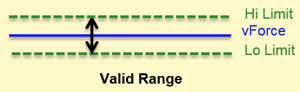
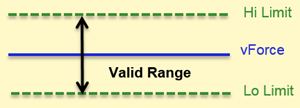
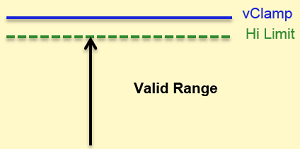
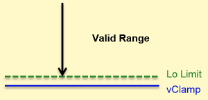
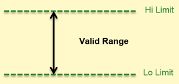

Limit setup of alarm checking
Low and high limit values are determined by vForce or vClamp related values. For vForce, the decisive values are vForce, LimitRelForce, and LimitMinDisForce. For vClamp, the decisive values are vClampLo, vClampHi, and LimitRelClamp.
Limits for vForce
In the vForce mode, you can use LimitRelForce and LimitMinDisForce to decide low and high limits.First, calculate the value of vForce*LimitRelForce (%).
If the value is greater than LimitMinDisForce, calculate LimitLo and LimitHi as follows:
- LimitLo = vForce - vForce*LimitRelForce (%)
- LimitHi = vForce + vForce*LimitRelForce (%)
If the value is less than LimitMinDisForce, calculate LimitLo and LimitHi as follows:
- LimitLo = vForce - LimitMinDisForce
- LimitHi = vForce + LimitMinDisForce
If LimitRelForce in V or mV is used, calculate LimitLo and LimitHi as follows:
- LimitLo = vForce - LimitRelForce (mV or V)
- LimitHi = vForce + LimitRelForce (mV or V)
The following images show the relationship of vForce, low and high limit values when the limit values are compared to vForce.
LimitRelForce = 5%:

If LimitRelForce = 10%, the valid range gets wider than LimitRelForce = 5%:

Limits for one-side vClamp on DPS128
When a one-side clamp is performed on a pin of DPS128, only a limit value need to be determined. The value is either LimitHi or LimitLo. The limit lie in the iForce value.
If iForce is greater than zero, calculate the limit value as follows:
-
LimitHi = vClamp - vClamp * LimitRelClamp (%)
-
LimitHi = vClamp - LimitRelClamp (mV or V)

If iForce is less than zero, calculate the limit value as follows:
-
LimitLo = vClamp + vClamp * LimitRelClamp (%)
-
LimitLo = vClamp + LimitRelClamp (mV or V)

If iForce is equal to zero, No compare is applied.
Fixed limits
For most of cases as described above, limit values depend on the vForce or vClamp value in the test program. For special cases, you can directly set the limit values with LimitHi and LimitLo.

Functional changes
- Introduced in SmartRDI 7.5.0